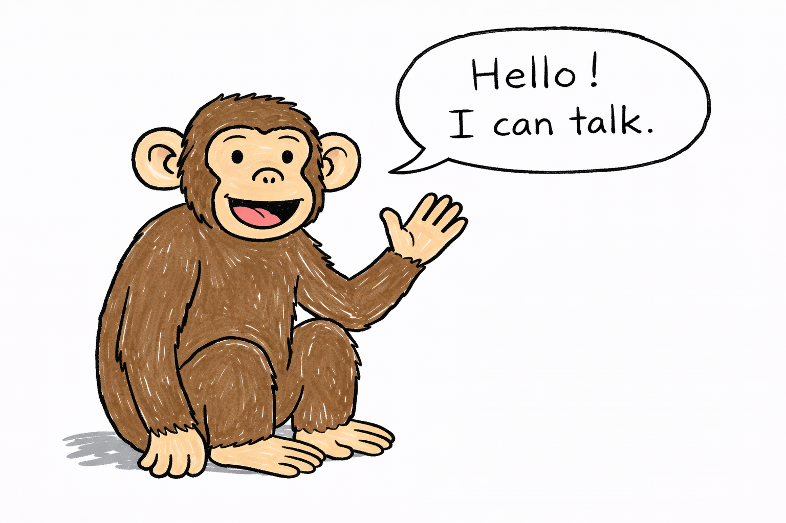

Sample Analysis
The Chimps Who Learned to Say Mama
By Carl Zimmer@The New York Times, Aug 5, 2024
Click on any colored text to see the analysis of that part of the text.

After analyzing decades-old videos of captive chimpanzees, scientists have concluded that the animals could utter a human word: “mama.”This is the most straightforward thesis statement that you can find in the opening sentence of an expository essay. It echoes the title in several ways. For example, "the animal" refers to "chimps", and "utter" is just equivalent to "say".
It’s not exactly the expansive dialogue in this year’s “Kingdom of the Planet of the Apes.” But the finding, published on Thursday in the journal Scientific Reports, may offer some important clues as to how speech evolved. The researchers argue that our common ancestors with chimpanzees had brains already equipped with some of the building blocks needed for talking.
Adriano Lameira, an evolutionary psychologist at the University of Warwick in Britain and one of the authors of the study, said that the ability to speak is perhaps the most important feature that sets us apart from other animals. Talking to each other allowed early humans to cooperate and amass knowledge over generations.
“It is the only trait that explains why we’ve been able to change the face of the earth,” Dr. Lameira said. “We would be an unremarkable ape without it.”
Scientists have long wondered why we can speak and other apes cannot.This is a class example of coherent writing - shifting the focus while maintaining its connection with the previous paragraph. The phrase "why we cam speak and other apes cannot" is linked back to "the only trait that explains why..." in the last sentence of the previous paragraph. But the part "scientists have long wondered..." tells the readers that this paragraph will be discussing a new topic, namely the history of the chimpanzee research. Beginning in the early 1900s, that curiosity led to a series of odd — and cruel — experiments. A few researchers tried raising apes in their own homes to see if living with humans could lead the young animals to speak.
In 1947, for example, the psychologist Keith Hayes and his wife, Catherine, adopted an infant chimpanzee. They named her Viki, and, when she was five months old, they started teaching her words. After two years of training, the couple later claimed, Viki could say “papa,” “mama,” “up” and “cup.”
By the 1980s, many scientists had dismissed the experiences of Viki and other adopted apes. For one, separating babies from their mothers was likely traumatic. “It’s not the sort of thing you could fund anymore, and with good reason,” said Axel Ekstrom, a speech scientist at the KTH Royal Institute of Technology in Stockholm.
Ethics aside, the adoption experiments did not result in fluent speech. The animals struggled to make even simple sound patterns.
That gulf in human and ape abilities fueled a debate: Were chimpanzees unable to speak because of their vocal anatomy, or because of their brains?
For decades, Philip Lieberman, an anthropologist at Brown University, made a forceful case for the vocal tract. He observed in 1969 that the human larynx and tongue are lower in the throat than they are in other primates. Dr. Lieberman, who died in 2022, argued that this anatomical shift allowed people to make the wide range of sounds required for complex speech.
But in 2016, a team of scientists made X-ray movies of vocalizing monkeys and found that the primate vocal tract was actually “speech ready.” That led some researchers to consider whether the ape brain lacked something essential for speech.
Some studies suggest that the human brain is exceptionalThis is a good example of cohesive writing. In the previous sentence, the author says "the ape brain lacked something essential", and in this new sentence, he uses the phrase "the human brain is exceptional" to create a contrast. This contrast logically connects the two sentences together and makes a smooth shift to the discussion of why human may be special. because it can send coordinated commands to the jaw and throat. That evolutionary step may have allowed our ancestors to combine consonants and vowels into syllables, which could then be combined into words.
And humans, unlike the vast majority of other animals, can learn new sounds from others.
But the authors of the new study suspected that the apes were underestimated. In his own research on orangutans, Dr. Lameira has become convinced that the apes are capable of learning how to vocalize sounds. Wild orangutans in neighboring groups make different calls, for example. In zoos, they have learned how to imitate a janitor’s whistle.
Mr. Ekstrom also wondered if scientists had been too quick to brush off the adoption experiments as failures. No one had ever analyzed the sounds that Viki and other chimpanzees made.
He began hunting for recordings. Eventually Mr. Ekstrom discovered that Viki appeared in a 1959 documentary. In the movie, the young chimp seems to say “papa” three times and “cup” once.
Mr. Ekstrom recorded himself saying “papa” and “cup,” and then compared his voice to Viki’s. Each time she said “papa,” she produced the same sound pattern, suggesting that she had indeed learned to say something new.
But as Mr. Ekstrom reported last year, Viki’s version of “papa” was fundamentally different from his own. She only made two popping “puh” sounds, without any vowels. She said “cup” in much the same way, making only a “c” sound followed by a “p.”
“That’s not very convincing if you’re trying to say, ‘Look, this chimp has learned to speak,’” Mr. Ekstrom said.
Mr. Ekstrom and Dr. Lameira teamed up to look for more recordings. They found a short YouTube video of a chimpanzee named Johnny that had lived at the Suncoast Primate Sanctuary in Palm Harbor, Fla. In the video, anonymously uploaded in 2007, Johnny appears to say “mama” in response to a woman’s encouragement.
Nancy Nagel, a sanctuary board member for 30 years, confirmed that the chimpanzee in the video was Johnny. “He would say a very hoarse ‘mama,’” she said in an interview. “That’s all he ever said.”
Mr. Ekstrom and Dr. Lameira then found a 1962 newsreel featuring a chimpanzee in Italy named Renata. She also uttered something that sounded like “mama.”
In the new study, the scientists analyzed how both Johnny and Renata said the word. Their sounds more closely resembled Mr. Ekstrom’s version of “mama.” Unlike Viki, both Johnny and Renata could add a vowel after a consonant.
“It looks essentially wordlike,” Mr. Ekstrom said. “It’s a very particular, very unique acoustic profile. You can’t mistake it for something else.”
Mr. Ekstrom then played the recordings for 61 volunteers, who then wrote down the sounds that they heard. Most of them agreed that Renata and Johnny were saying “mama.”
“This paper is a good example of the tug of war in the ‘ape language’ field,” Julia Fischer, a cognitive scientist at the German Primate Center in Göttingen, said in an email. She was not convinced by the study. “What the apes are doing vocally has nothing to do with human speech,” she said.
Instead, Dr. Fischer suggested, Renata and Johnny might be making a standard chimpanzee sound, known as a pant-grunt. “The simplest explanation is that they simply added two of these pant-grunts together and were rewarded for doing so,” she said.
But Michel Belyk, a psychologist at Edge Hill University in Britain, said the results did in fact suggest that ancient apes might have already had some of the mental requirements for speech.
“Humanity, despite all its particularities, did not spring up from under a rock, but was molded by evolution from the clay of our primate ancestors,” he said.
Mr. Ekstrom does not think that Johnny and Renata alone can settle the question of the origins of speech. “It clearly shows that some theories are too simple to account for all of the facts,” he said.
To find new clues, he is now studying fossils of our ancestors after they had split from other apes.
“This black box spans something like six million years, so it’s plenty spacious,” he said.In many cases, the author could quote other's opinion and "borrow" it as the author's own takeaway in the essay. In the current case, the author appears to agree with Mr. Ekstrom that there has been no decisive evidence that chimps can learn human languages, since "the black box is plenty spacious".